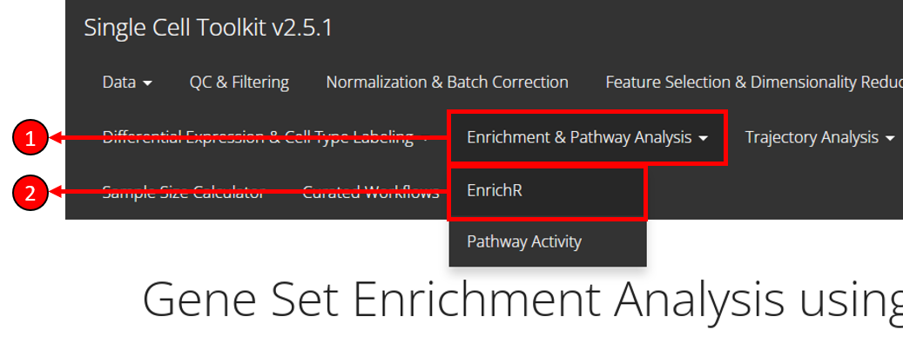
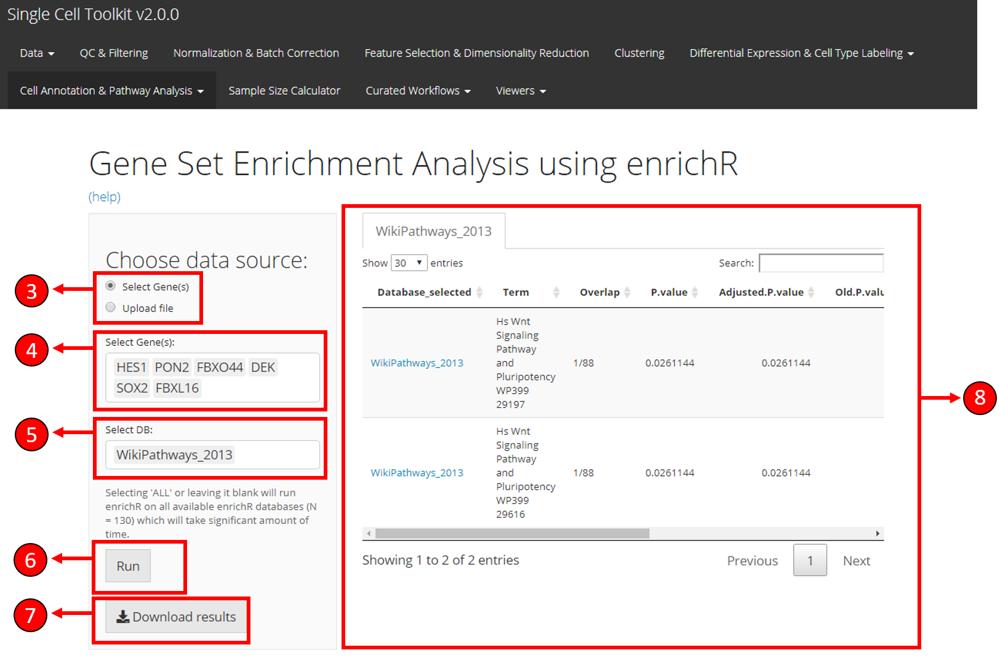
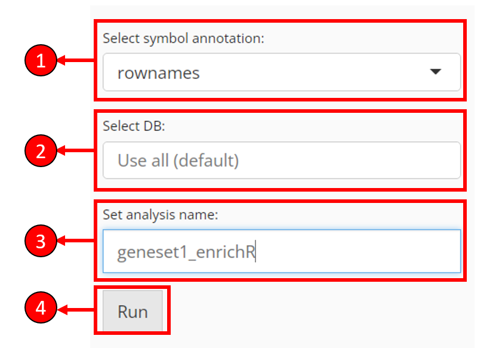
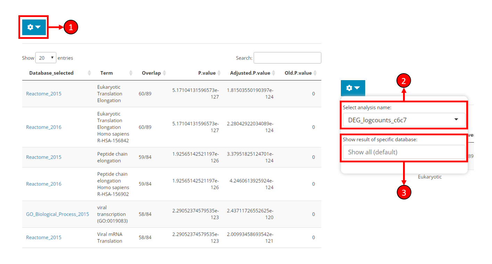

vignettes/articles/cnsl_enrichR.Rmd
cnsl_enrichR.RmdEnrichR [1][2] is a GSE (Gene Set Enrichment) method that infers biological knowledge by performing enrichment of input gene sets with curated biologically relevant prior databases that represent biological functions or functional pathways. Single-Cell Toolkit (SCTK) offers an easy to use interface to the EnrichR method and only requires the selection of input genes and the databases against which the genes should be tested.
To view detailed instructions on how to use the method from the toolkit, please select “Interactive Analysis” for using enrichR in shiny application or “Console Analysis” for using this method on R console from the tabs below:
An overall workflow guide on how to use EnrichR sub-tab is described below.
 To enter the tab for running EnrichR analysis, users need to:
1. Select Enrichment & Pathway Analysis tab from the top menu.
2. Select EnrichR option from the drop-down menu.
Approaches to select genes

At the top-left of the EnrichR tab, a radio-button set is provided for users to choose a way to specify the gene set to use for EnrichR test.
Select DE Analysis - After performing differential expression analysis with SCTK, users will have options available in this dropdown box. Users can select an analysis to import the DEGs identified there.
Use Log2FC greater than - Filter the DEGs, to only use genes with the absolute value of log2 fold-change greater than the input.
Use FDR less than - Filter the DEGs, to only use genes with FDR value less than the input.
Only use upregulated genes - Filter the DEGs, check to only use genes with positive log2 fold-change values.
Use mean exp in group1 greater than - Filter the DEGs, to only use genes with mean expression within group1 (what is group1?) greater then the input.
Use mean exp in group2 less than - Filter the DEGs, to only use genes with mean expression within group2 less then the input.
Use exp% in group1 greater than - Filter the DEGs, to only use genes expressed in greater than this fraction of cells in group1.
Use exp% in group2 less than - Filter the DEGs, to only use genes expressed in greater than this fraction of cells in group1.
By making changes above, the number of remaining DEGs and the list of remaining DEGs will be shown at the bottom of this section.
Users can upload a text table file where the first column contains the gene identifiers. A text file with one gene per line works the same. CSV, TSV or TXT formats may be accepted. Depending on the exact situation of the file, selection might be applied in the following options.
Header - If the first line of the file is a header (e.g. column names if it’s a table, “Genes,” “Symbols” or etc. if it’s just the genes), users need to check this option to let the APP ignore the line.
Separator - If the text file is a table, users need to make sure of the separator of entries and make the corresponding selection here. Usually, “Comma” for CSV files and “Tab” for TSV files.
Quote - Depending on whether each entry in the text table file is quoted, users might make a selection here. Users might open file with a text editor software, or run head ${FILENAME} command on Unix system, to exactly have a check on it.
Match feature type - If the type of the gene identifiers (e.g. symbol, ensembl ID, etc.) provided in the file does not match to the default type for the dataset (denoted as “rownames”), users need to select from available feature metadata to find the match.
Other necessary options

Select symbol annotation - EnrichR only expects gene symbols as the input. That’s to say, if the genes selected from previous steps appear to be IDs, EnrichR is likely to return zero lines of result. In this case, users are provided with a selection to convert the identifier type from available feature metadata.
Select DB - Select databases to test the input genes against. By default, no selection is made and all available databases will be used. However, this may take long time to compute
Set analysis name - Users have to set an analysis name for each run, in order to distinguish the results of different input.
Press Run to start computation of enrichment scores.
Result display

After running the analysis, the result table will be automatically shown on the right side of the EnrichR tab (left part of the figure). The content to be shown might be adjusted as instructed below.
Click on the cog button to open a dropdown box with options (right part of the figure).
Select analysis name - Choose to show the result of a sepecific analysis. All EnrichR analyses conducted by SCTK will be available here.
Show result of sepecific database - Filter the result table by database. Only the databases used for the selected analysis will be available here. Leave unselected for showing all results.
1. Select genes and databases
genes <- c("HES1", "PON2", "FBXO44", "DEK", "SOX4", "FBXL16")
databases <- enrichR::listEnrichrDbs()$libraryName2. Run EnrichR
sce <- runEnrichR(inSCE = sce, features = genes, db = databases,
analysisName = "tutorial_analysis")For the runEnrichR() function above, the required parameters are:
inSCE: The input SingleCellExperiment objectfeatures: A vector of input gene namesanalysisName: A string to identify a single analysisOther optional parameters include:
db: A character vector of the databases to testby: Indicates where the method should find the features. Can be "rownames" or a column name of rowData(inSCE).featureName: EnrichR expects gene symbols as the input. Need to choose from rowData to convert features if necessary.3. Get results
getEnrichRResult(sce, analysisName = "tutorial_analysis")$result
# Load singleCellTK & pbmc3k example data
library(singleCellTK)
sce <- importExampleData(dataset = "pbmc3k")
# Select genes
genes <- c("HES1", "PON2", "FBXO44", "DEK", "SOX4", "FBXL16")
# Fetch databases
databases <- enrichR::listEnrichrDbs()$libraryName
# Run enrichR
sce <- runEnrichR(inSCE = sce, features = genes, db = databases,
analysisName = "tutorial_test")
# Print the first five results
result <- getEnrichRResult(sce, "tutorial_test")$result
head(result)| Database_selected | Term | Overlap | P.value | Adjusted.P.value | Old.P.value | Old.Adjusted.P.value | Odds.Ratio | Combined.Score | Genes | link | |
|---|---|---|---|---|---|---|---|---|---|---|---|
| 7750 | LINCS_L1000_Chem_Pert_down | LJP006 MCF10A 3H-withaferin-a-3.33 | 3/68 | 7.46e-07 | 0.001323 | 0 | 0 | 307 | 4326 | PON2;HES1;SOX4 | https://clue.io/ |
| 7751 | LINCS_L1000_Chem_Pert_down | LJP006 MCF10A 3H-radicicol-10 | 3/82 | 1.32e-06 | 0.001323 | 0 | 0 | 252 | 3413 | PON2;HES1;SOX4 | https://clue.io/ |
| 5530 | LINCS_L1000_Chem_Pert_up | LJP006 A375 24H-KIN001-043-1.11 | 3/91 | 1.80e-06 | 0.004006 | 0 | 0 | 226 | 2992 | PON2;HES1;SOX4 | https://clue.io/ |
| 4156 | Genes_Associated_with_NIH_Grants | R01GM072915 | 2/8 | 2.10e-06 | 0.000279 | 0 | 0 | 1666 | 21778 | DEK;SOX4 | https://grants.nih.gov/grants/oer.htm |
| 7752 | LINCS_L1000_Chem_Pert_down | LJP006 A549 24H-BI-2536-0.37 | 3/119 | 4.05e-06 | 0.002716 | 0 | 0 | 171 | 2128 | PON2;HES1;SOX4 | https://clue.io/ |
| 4157 | Genes_Associated_with_NIH_Grants | R01CA118316 | 2/12 | 4.94e-06 | 0.000329 | 0 | 0 | 999 | 12208 | DEK;SOX4 | https://grants.nih.gov/grants/oer.htm |